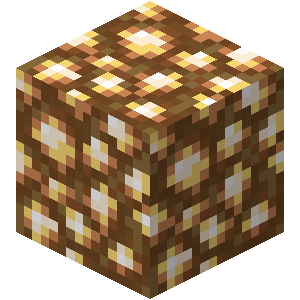
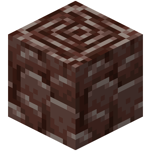
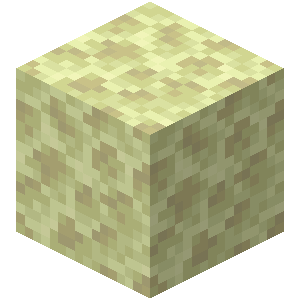
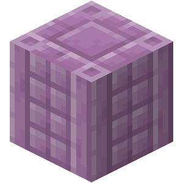
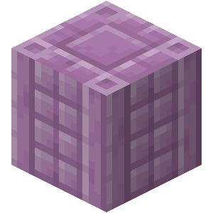

Kameny v dimenzi nether
Netherrack
Netherrack je křehký kamenný blok , který se hojně nachází v Netheru a v kapkách pod zničenými portály.

Blackstone
Blackstone je tmavě zbarvený blok, který funguje podobně jako dlážděný kámen nebo dlážděná hlubinná břidlice . Lze jej nalézt pouze v Netheru.
Basalt
Basalt je vyvřelá hornina nalezená v Netheru.
Glow stone
Glowstone je světlo vyzařující blok , který se vyskytuje ve větvících se strukturách, které lze nalézt visící ze stropů a převisů v Netheru.

Magma block
Magmatický blok je přirozeně se vyskytující blok vyzařující světlo , který se nachází v Podsvětí a Nadsvětě . Způsobuje nepřetržité poškození, když se na něj šlápne, což se považuje za poškození ohněm, kromě toho, že nezapálí moby.

Ancient debris
Ancient debris je vzácná ruda nalezená v Netheru a jsou hlavním zdrojem netheritových úlomků . Jeho vysoká odolnost proti výbuchu ho činí imunním vůči běžným výbuchům . Ve formě předmětu plave na lávě a nemůže být spálena žádnou formou ohně.

Kameny v lokaci the end
End Stone
End Stoneje blok, který se objevuje v Konci a kromě generovaných struktur tvoří veškerou pevnou půdu, která v dané dimenzi existuje.

Obsidian
Obsidián je blok nalezený ve všech dimenzích nebo vytvořený, když voda teče přes zdroj lávy . Vyznačuje se vysokou tvrdostí a odolností proti výbuchu , díky čemuž je imunní vůči běžným výbuchům . Obsidian se používá k výrobě a výrobě rámu pro podsvětí portál . Lze jej získat pouze těžbou diamantovým nebo netheritským krumpáčem.
Purpurblock
Purpurové bloky a purpurové sloupy jsou dekorativní bloky , které se přirozeně generují v koncových městech a koncových lodích.
 
